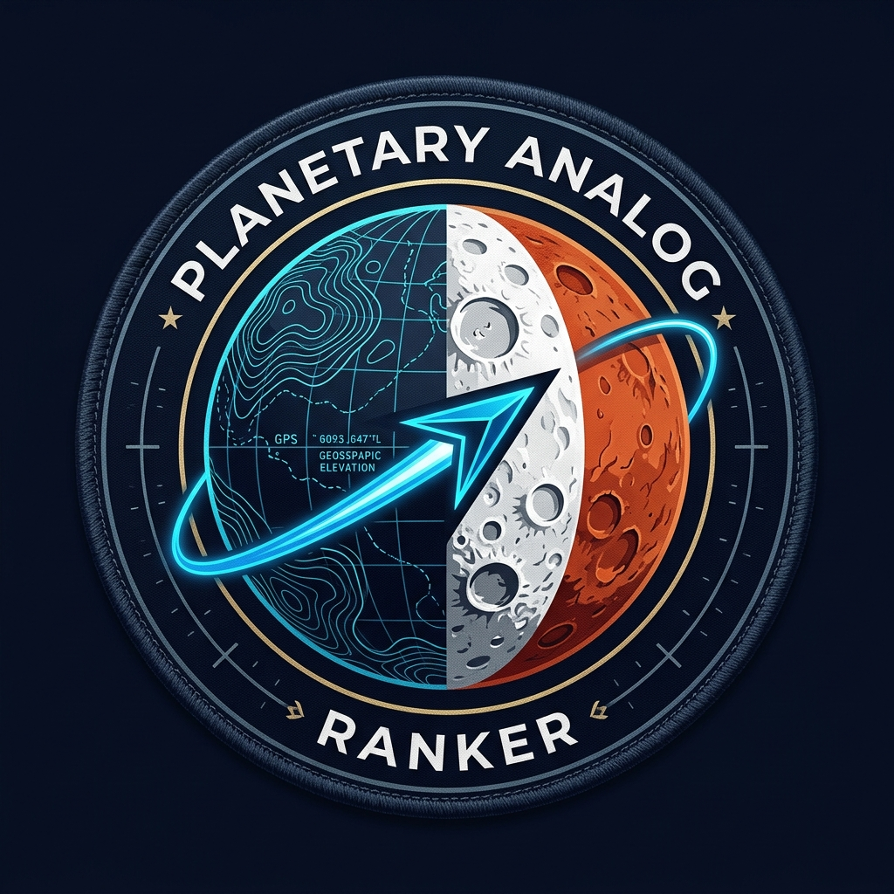
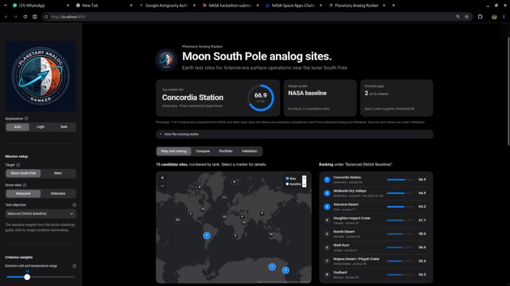

OFFICIAL MISSION INSIGNIA
NASA SPACE APPS CHALLENGE 2026
SUBZERO
Planetary Analog Ranker & Portfolio Optimizer
A scientific decision-support engine matching Earth testing terrains to Artemis Lunar South Pole & Mars surface environments.
PROJECT & ACCESS DETAILS:
Team Name: SubZero
Open Code: github.com/obaid404notfound/planetary-analog-ranker
Challenge Context & Critical Bottleneck
Why Planetary Analog Selection Fails Today
Hardware failure on the Moon or Mars is catastrophic. Testing on Earth is essential, but flawed.
POLAR DEEP-FREEZE
e.g., Concordia Station, McMurdo
- ✓ Cryogenic cold (-80°C cold traps)
- ✓ Low grazing polar illumination
- ✓ Extreme crew isolation & confinement
- ✗ Missing basaltic rock & regolith
- ✗ Missing volcanic lava tubes
- ✗ Thick ice sheet masks surface geology
VOLCANIC BASALT
e.g., Askja (Iceland), Mauna Kea
- ✓ Authentic basaltic mineral regolith
- ✓ Underground lava tube caverns
- ✓ Cratered rover mobility obstacles
- ✗ Above-freezing summer temperatures
- ✗ High atmospheric humidity & rain
- ✗ Standard 24-hr day/night cycle
HYPER-ARID DESERTS
e.g., Atacama Desert, Namib
- ✓ Extreme aridity & zero precipitation
- ✓ High UV radiation flux
- ✓ Oxidized soil perchlorates & dust
- ✗ Zero cryogenic freeze conditions
- ✗ Standard Earth gravitational pull
- ✗ High daytime surface heat
THE CORE BOTTLENECK:
No single Earth site replicates all target environments. Missions have historically selected analog sites based on subjective habit rather than empirical data—leaving dangerous hardware vulnerabilities undiscovered until launch.
SubZero Solution & Software Platform
Empirical Planetary Analog Evaluation Engine
Transforms subjective expedition planning into a quantitative, multi-criteria decision pipeline.
▶ 8 Multi-Criteria Dimensions
Scores slope roughness, cryogenic cold, UV radiation, regolith chemistry, diurnal swing, pressure, aridity, and darkness.
▶ Submodular Portfolio Finder
Greedy coverage optimization selects complementary 2–3 site teams to achieve 100% test requirement coverage.
▶ Dirichlet Stability Verification
Runs 1,000 Monte Carlo noise trials to prove candidate rankings withstand subjective weight shifts.
▶ 100% Open & Accessible
Deployed on Streamlit Cloud, ingesting real NASA satellite data with zero proprietary software dependencies.

SubZero Live Dashboard: Interactive Global Analog Map & Scientific Leaderboard
Workflow & User Experience
Four Steps From Target to Optimal Test Portfolio
An intuitive decision workflow designed for flight mission planners, rover engineers, and scientists.
STEP 01
Mission Setup
Select target body (Moon South Pole vs. Mars) and choose operational mission presets (Rover Mobility, ISRU Drilling, or Human Habitat).
STEP 02
Empirical Ranking
SubZero scores 15 global candidate sites using min-max normalized physical metrics, automatically detecting statistical ties within 2%.
STEP 03
Radar Profile Alignment
Interactive side-by-side radar charts align Earth analog sites against measured planetary data (LRO Diviner, LOLA, Curiosity REMS).
STEP 04
Portfolio Optimization
Submodular greedy solver outputs the optimal 2–3 site pairing that eliminates test blindspots and spotlights remaining gaps.
Open Science Ingestion Pipeline
Powered by Real NASA Earth & Planetary Data
Ingests open space agency datasets—zero runtime API calls, reproducible offline data pipeline.
NASA SRTM & ASTER GDEM
Terrain Roughness & Elevation Variance
Provides 30m digital elevation data across all candidate sites. SubZero calculates slope steepness and surface roughness to simulate rover trafficability on hazardous lunar/Martian regolith.
NASA POWER & CERES Radiometry
Solar Irradiance & UV Exposure
Supplies satellite-derived surface solar flux and UV radiation index data. Evaluates photovoltaic power generation testing and spacesuit polymer photodegradation.
NASA LRO (Diviner, LOLA, CRaTER)
Artemis Lunar South Pole Baselines
Calibrates planetary ground truth: -246°C cryogenic cold traps, low grazing polar illumination, and steep 12° Shackleton Crater rim topologies for Artemis landing simulation.
Curiosity REMS & MOLA Mars Data
Martian Atmospheric & Thermal Swings
Ingests Rover Environmental Monitoring Station diurnal temperature swings (90°C range), low surface atmospheric pressure, and Martian soil chemistry models.
Value to Spaceflight & Exploration
De-Risking Human & Robotic Planetary Missions
SubZero delivers immediate scientific and economic impact for agencies, commercial space, and academia.
MISSION SAFETY
Preventing Hardware Failure
Hardware tested against mismatched Earth terrain will fail on the Moon. SubZero guarantees that life-support systems, rovers, and spacesuits are tested against empirical extreme physics before launch.
✓ Authentic cryogenic deep freeze
✓ Rover terrain obstacle validation
✓ Protects astronauts and multimillion-dollar payloads
ECONOMIC ROI
Saving Testing Budgets
Field expeditions to Antarctica or the Arctic cost millions of dollars. SubZero's portfolio optimizer eliminates redundant expeditions and pinpoints minimal-cost site pairings.
✓ Eliminates redundant expedition spend
✓ 2-site portfolio achieves 88%+ coverage
✓ Accounts for airport and logistics distance
OPEN SCIENCE
Democratizing Architecture
Replaces closed, proprietary decision-making with transparent, reproducible open science accessible to emerging space nations, researchers, and university cubesat teams.
✓ 100% open-source Python stack
✓ Transparent mathematical formulas
✓ Zero vendor lock-in or paid APIs
Future Vision & Verification
Roadmap, Open Access & Acknowledgments
SubZero is live, validated with 18 automated tests, and ready for deployment.
FUTURE DEVELOPMENT ROADMAP:
▶ Outer Planet Analogs
Expand catalog to evaluate icy moons—including Europa sub-ice analog testing (Lake Vostok) and Titan cryo-lake environments.
▶ Live NASA PDS API Sync
Automate direct connection to NASA Planetary Data System for live ingestion of new rover and orbiter data streams.
▶ Soil Assay & Electrostatic Dust
Ingest perchlorate chemical assays and electrostatic dust levitation modeling for lunar dust mitigation testing.
PROJECT LINKS & ACCESS:
GitHub Repository: github.com/obaid404notfound/planetary-analog-ranker
Automated Tests: 18/18 Unit & UI Integration Tests Passing
SPECIAL THANKS:
Thank you to the NASA Space Apps Challenge 2026 organizers, evaluators, and the open planetary science community for making these datasets universally accessible.